Fútbol · calibración del modelo por liga y mercado
Dixon-Coles con xG (ξ=0.003, mezcla xG 0.7, regresión a la media con <10 partidos). Prueba walk-forward 2025-01-01..último dato, re-ajuste cada 14 días, solo datos anteriores a cada partido. Generado 2026-10-26T07:14Z.
Log-loss (desde 28-oct): penaliza fuerte las probabilidades seguras que fallan; más bajo = mejor. 1X2 = log-loss multiclase (−ln de la prob. del resultado ocurrido); el resto, binario por línea. Probabilidades recortadas a [0.000001, 0.999999]. «Base liga» = frecuencia de cada resultado/línea en esa liga en el periodo de prueba; «casa» = cierre sin margen (solo 1X2 y O/U 2.5 tienen cuota en la fuente). «Mejora LL» = 1 − LL modelo ÷ LL base (positivo = mejor que la frecuencia de la liga). El Brier del 1X2 en estas tablas es la media por resultado (1, X, 2 por separado). La lista blanca sigue usando el criterio de abajo (Brier/ECE/pendiente); el log-loss es informativo.
Criterio de lista blanca: ≥200 partidos, ECE ≤ 0.035, BSS ≥ 0.0, pendiente 0.7–1.3. Grado A: ≥300 partidos, ECE ≤ 0.025, BSS ≥ 0.01, pendiente 0.8–1.2. Lo que no cumple, las ligas sin histórico suficiente y los equipos filiales (B / II / Sub-23) quedan excluidos del motor.
Global por mercado
| Mercado | n | Brier | Brier base liga | Log-loss | LL base liga | Mejora LL vs base | LL casa | LL modelo (mismos) | ECE | BSS | Pendiente |
|---|---|---|---|---|---|---|---|---|---|---|---|
| 1X2 | 40287 | 0.202 | 0.216 | 1.014 multiclase | 1.069 | +5.1 % | 0.993 | 1.014 | 0.006 | 0.089 | 1.064 |
| Goles totales | 40287 | 0.209 | 0.209 | 0.605 binario | 0.606 | +0.1 % | 0.671 | 0.684 | 0.017 | 0.162 | 0.948 |
| Ambos anotan | 13429 | 0.246 | 0.245 | 0.686 binario | 0.682 | -0.5 % | — | — | 0.034 | 0.005 | 0.621 |
| Goles por equipo | 53716 | 0.203 | 0.212 | 0.593 binario | 0.613 | +3.2 % | — | — | 0.014 | 0.170 | 1.000 |
| 1er tiempo | 16428 | 0.214 | 0.214 | 0.618 binario | 0.620 | +0.2 % | — | — | 0.018 | 0.141 | 0.989 |
| Córners | 32856 | 0.231 | 0.229 | 0.654 binario | 0.649 | -0.8 % | — | — | 0.028 | 0.066 | 0.748 |
| Tarjetas | 24642 | 0.217 | 0.216 | 0.623 binario | 0.622 | -0.1 % | — | — | 0.019 | 0.116 | 0.879 |
Filtro de publicación con cuotas reales (Football-Data, apertura → cierre)
| Grupo | n | Acierto | ROI | CLV medio |
|---|---|---|---|---|
| todas | 3920 | 40.0 % | -12.0 % | -0.6 % |
| A | 1464 | 38.8 % | -11.3 % | -0.8 % |
| EPL|1x2 | 93 | 46.2 % | +11.3 % | -0.4 % |
| EPL|goles | 207 | 44.0 % | -11.7 % | -0.3 % |
| ENG2|1x2 | 192 | 34.4 % | -15.6 % | -0.2 % |
| ENG2|goles | 274 | 44.5 % | -14.6 % | -0.2 % |
| BUNDES|1x2 | 85 | 35.3 % | -18.6 % | -2.6 % |
| GER2|1x2 | 121 | 34.7 % | -17.7 % | -0.7 % |
| GER2|goles | 139 | 46.0 % | -3.5 % | +0.9 % |
| LALIGA|1x2 | 112 | 33.0 % | -21.2 % | -1.9 % |
| LALIGA|goles | 172 | 41.9 % | -11.8 % | -0.3 % |
| ESP2|1x2 | 135 | 38.5 % | -6.8 % | -0.1 % |
| SERIEA|1x2 | 88 | 38.6 % | -6.3 % | -1.2 % |
| SERIEA|goles | 212 | 43.4 % | -12.4 % | -0.9 % |
| LIGUE1|1x2 | 90 | 32.2 % | -19.4 % | -0.8 % |
| LIGUE1|goles | 161 | 41.0 % | -17.7 % | -1.5 % |
| NED1|1x2 | 93 | 31.2 % | -26.1 % | -1.0 % |
| POR|1x2 | 77 | 35.1 % | -16.9 % | -1.8 % |
| POR|goles | 147 | 48.3 % | -4.0 % | -0.6 % |
| BEL|1x2 | 88 | 30.7 % | -32.9 % | -1.1 % |
| BEL|goles | 184 | 47.8 % | -3.9 % | -0.2 % |
| TUR|goles | 174 | 47.7 % | -2.1 % | -0.9 % |
| TUR|1x2 | 47 | 34.0 % | -20.7 % | -1.6 % |
| SCO|1x2 | 64 | 42.2 % | +5.4 % | -0.3 % |
| SCO|goles | 96 | 42.7 % | -12.1 % | +0.1 % |
| SUI|1x2 | 92 | 35.9 % | -22.1 % | sin cierre |
| AUT|1x2 | 61 | 31.1 % | -26.7 % | sin cierre |
| ARG|1x2 | 177 | 34.5 % | -11.3 % | sin cierre |
| MLS|1x2 | 179 | 36.3 % | -14.0 % | sin cierre |
| BRA|1x2 | 126 | 43.7 % | +4.1 % | sin cierre |
| DEN|1x2 | 51 | 35.3 % | -13.3 % | sin cierre |
| LIGAMX|1x2 | 104 | 35.6 % | -16.8 % | sin cierre |
| SWE|1x2 | 79 | 38.0 % | -15.7 % | sin cierre |
CLV solo se mide en 1X2 y total principal de goles. En córners, tarjetas y mercados de jugador: no aplica (línea poco líquida).
Liga × mercado (lista blanca)
| Liga | Mercado | Estado | Partidos | Brier | ECE | Pend. | Brier casa | Brier modelo (mismos) | Log-loss | LL base liga | Mejora LL | LL casa | Motivo |
|---|---|---|---|---|---|---|---|---|---|---|---|---|---|
| Premier League | 1X2 | A | 642 | 0.201 | 0.019 | 1.113 | 0.198 | 0.201 | 1.005 | 1.079 | +6.8 % | 0.991 | |
| Premier League | Goles totales | B | 642 | 0.211 | 0.030 | 0.940 | 0.244 | 0.250 | 0.612 | 0.607 | -0.9 % | 0.681 | |
| Premier League | Ambos anotan | excluido | 642 | 0.249 | 0.036 | 0.207 | — | — | 0.692 | 0.688 | -0.7 % | — | ECE 0.036>0.035; BSS -0.009≤0 (no mejora a la frecuencia base); pendiente 0.21 fuera de [0.7,1.3] |
| Premier League | Goles por equipo | A | 642 | 0.204 | 0.015 | 0.994 | — | — | 0.595 | 0.621 | +4.2 % | — | |
| Premier League | 1er tiempo | A | 642 | 0.215 | 0.016 | 1.002 | — | — | 0.622 | 0.619 | -0.4 % | — | |
| Premier League | Córners | excluido | 642 | 0.240 | 0.042 | 0.626 | — | — | 0.675 | 0.658 | -2.6 % | — | ECE 0.042>0.035; pendiente 0.63 fuera de [0.7,1.3] |
| Premier League | Tarjetas | B | 642 | 0.216 | 0.028 | 0.802 | — | — | 0.621 | 0.615 | -1.1 % | — | |
| Championship | 1X2 | A | 952 | 0.213 | 0.017 | 0.901 | 0.209 | 0.213 | 1.057 | 1.079 | +2.1 % | 1.042 | |
| Championship | Goles totales | B | 952 | 0.213 | 0.034 | 0.949 | 0.247 | 0.256 | 0.616 | 0.609 | -1.2 % | 0.688 | |
| Championship | Ambos anotan | excluido | 952 | 0.250 | 0.069 | 0.622 | — | — | 0.692 | 0.685 | -1.1 % | — | ECE 0.069>0.035; BSS -0.015≤0 (no mejora a la frecuencia base); pendiente 0.62 fuera de [0.7,1.3] |
| Championship | Goles por equipo | B | 952 | 0.205 | 0.028 | 1.067 | — | — | 0.597 | 0.604 | +1.1 % | — | |
| Championship | 1er tiempo | B | 952 | 0.217 | 0.030 | 0.951 | — | — | 0.627 | 0.623 | -0.7 % | — | |
| Championship | Córners | excluido | 952 | 0.239 | 0.038 | 0.710 | — | — | 0.671 | 0.662 | -1.3 % | — | ECE 0.038>0.035 |
| Championship | Tarjetas | B | 952 | 0.213 | 0.034 | 0.746 | — | — | 0.615 | 0.605 | -1.7 % | — | |
| Bundesliga | 1X2 | A | 531 | 0.199 | 0.024 | 0.997 | 0.194 | 0.199 | 1.000 | 1.079 | +7.2 % | 0.980 | |
| Bundesliga | Goles totales | excluido | 531 | 0.204 | 0.041 | 0.858 | 0.220 | 0.227 | 0.595 | 0.607 | +1.9 % | 0.631 | ECE 0.041>0.035 |
| Bundesliga | Ambos anotan | excluido | 531 | 0.244 | 0.035 | 0.300 | — | — | 0.681 | 0.677 | -0.6 % | — | ECE 0.035>0.035; BSS -0.008≤0 (no mejora a la frecuencia base); pendiente 0.30 fuera de [0.7,1.3] |
| Bundesliga | Goles por equipo | A | 531 | 0.199 | 0.016 | 0.966 | — | — | 0.582 | 0.613 | +5.1 % | — | |
| Bundesliga | 1er tiempo | A | 531 | 0.206 | 0.021 | 1.028 | — | — | 0.600 | 0.607 | +1.1 % | — | |
| Bundesliga | Córners | excluido | 531 | 0.234 | 0.038 | 0.771 | — | — | 0.662 | 0.663 | +0.1 % | — | ECE 0.038>0.035 |
| Bundesliga | Tarjetas | excluido | 531 | 0.214 | 0.054 | 0.841 | — | — | 0.619 | 0.611 | -1.2 % | — | ECE 0.054>0.035 |
| 2. Bundesliga | 1X2 | A | 531 | 0.213 | 0.016 | 0.933 | 0.208 | 0.213 | 1.057 | 1.065 | +0.7 % | 1.040 | |
| 2. Bundesliga | Goles totales | B | 531 | 0.211 | 0.030 | 0.931 | 0.244 | 0.247 | 0.613 | 0.603 | -1.6 % | 0.680 | |
| 2. Bundesliga | Ambos anotan | excluido | 531 | 0.251 | 0.087 | -0.691 | — | — | 0.695 | 0.676 | -2.7 % | — | ECE 0.087>0.035; BSS -0.037≤0 (no mejora a la frecuencia base); pendiente -0.69 fuera de [0.7,1.3] |
| 2. Bundesliga | Goles por equipo | B | 531 | 0.210 | 0.026 | 0.915 | — | — | 0.609 | 0.604 | -0.9 % | — | |
| 2. Bundesliga | 1er tiempo | excluido | 531 | 0.221 | 0.046 | 0.881 | — | — | 0.633 | 0.628 | -0.9 % | — | ECE 0.046>0.035 |
| 2. Bundesliga | Córners | excluido | 531 | 0.238 | 0.039 | 0.743 | — | — | 0.669 | 0.659 | -1.5 % | — | ECE 0.039>0.035 |
| 2. Bundesliga | Tarjetas | B | 531 | 0.231 | 0.033 | 0.823 | — | — | 0.654 | 0.648 | -1.0 % | — | |
| LaLiga | 1X2 | B | 668 | 0.193 | 0.029 | 1.239 | 0.187 | 0.193 | 0.977 | 1.060 | +7.8 % | 0.949 | |
| LaLiga | Goles totales | A | 668 | 0.204 | 0.020 | 1.031 | 0.237 | 0.244 | 0.595 | 0.608 | +2.3 % | 0.667 | |
| LaLiga | Ambos anotan | excluido | 668 | 0.248 | 0.070 | 0.774 | — | — | 0.688 | 0.685 | -0.4 % | — | ECE 0.070>0.035; BSS -0.006≤0 (no mejora a la frecuencia base) |
| LaLiga | Goles por equipo | B | 668 | 0.194 | 0.035 | 1.133 | — | — | 0.573 | 0.601 | +4.7 % | — | |
| LaLiga | 1er tiempo | A | 668 | 0.213 | 0.018 | 1.000 | — | — | 0.616 | 0.631 | +2.4 % | — | |
| LaLiga | Córners | B | 668 | 0.228 | 0.028 | 0.771 | — | — | 0.648 | 0.657 | +1.4 % | — | |
| LaLiga | Tarjetas | B | 668 | 0.229 | 0.029 | 0.868 | — | — | 0.649 | 0.654 | +0.8 % | — | |
| Segunda División | 1X2 | B | 744 | 0.207 | 0.017 | 1.230 | 0.202 | 0.207 | 1.034 | 1.062 | +2.6 % | 1.011 | |
| Segunda División | Goles totales | excluido | 744 | 0.219 | 0.038 | 0.850 | 0.243 | 0.251 | 0.629 | 0.629 | +0.1 % | 0.679 | ECE 0.038>0.035 |
| Segunda División | Ambos anotan | excluido | 744 | 0.247 | 0.050 | 0.845 | — | — | 0.688 | 0.689 | +0.2 % | — | ECE 0.050>0.035 |
| Segunda División | Goles por equipo | A | 744 | 0.207 | 0.022 | 1.029 | — | — | 0.603 | 0.614 | +1.7 % | — | |
| Segunda División | 1er tiempo | B | 744 | 0.217 | 0.034 | 0.956 | — | — | 0.625 | 0.625 | +0.0 % | — | |
| Segunda División | Córners | B | 744 | 0.231 | 0.034 | 0.710 | — | — | 0.656 | 0.646 | -1.5 % | — | |
| Segunda División | Tarjetas | excluido | 744 | 0.223 | 0.040 | 0.863 | — | — | 0.636 | 0.638 | +0.3 % | — | ECE 0.040>0.035 |
| Serie A | 1X2 | B | 652 | 0.197 | 0.028 | 1.234 | 0.191 | 0.197 | 0.990 | 1.083 | +8.6 % | 0.964 | |
| Serie A | Goles totales | A | 652 | 0.212 | 0.015 | 0.937 | 0.248 | 0.253 | 0.614 | 0.607 | -1.2 % | 0.690 | |
| Serie A | Ambos anotan | excluido | 652 | 0.251 | 0.013 | 0.325 | — | — | 0.695 | 0.693 | -0.3 % | — | BSS -0.004≤0 (no mejora a la frecuencia base); pendiente 0.33 fuera de [0.7,1.3] |
| Serie A | Goles por equipo | A | 652 | 0.205 | 0.011 | 1.016 | — | — | 0.598 | 0.631 | +5.3 % | — | |
| Serie A | 1er tiempo | B | 652 | 0.216 | 0.026 | 0.971 | — | — | 0.623 | 0.620 | -0.5 % | — | |
| Serie A | Córners | B | 652 | 0.219 | 0.030 | 0.759 | — | — | 0.629 | 0.627 | -0.3 % | — | |
| Serie A | Tarjetas | excluido | 652 | 0.196 | 0.036 | 1.059 | — | — | 0.577 | 0.610 | +5.4 % | — | ECE 0.036>0.035 |
| Ligue 1 | 1X2 | A | 539 | 0.198 | 0.022 | 1.106 | 0.192 | 0.198 | 0.996 | 1.056 | +5.7 % | 0.971 | |
| Ligue 1 | Goles totales | A | 539 | 0.215 | 0.018 | 0.872 | 0.234 | 0.243 | 0.622 | 0.626 | +0.7 % | 0.661 | |
| Ligue 1 | Ambos anotan | excluido | 539 | 0.248 | 0.026 | 0.441 | — | — | 0.689 | 0.688 | -0.1 % | — | BSS -0.001≤0 (no mejora a la frecuencia base); pendiente 0.44 fuera de [0.7,1.3] |
| Ligue 1 | Goles por equipo | A | 539 | 0.209 | 0.020 | 0.929 | — | — | 0.604 | 0.620 | +2.6 % | — | |
| Ligue 1 | 1er tiempo | excluido | 539 | 0.216 | 0.036 | 0.977 | — | — | 0.624 | 0.618 | -0.9 % | — | ECE 0.036>0.035 |
| Ligue 1 | Córners | B | 539 | 0.230 | 0.024 | 0.766 | — | — | 0.652 | 0.645 | -1.2 % | — | |
| Ligue 1 | Tarjetas | A | 539 | 0.204 | 0.025 | 1.006 | — | — | 0.592 | 0.600 | +1.4 % | — | |
| Eredivisie | 1X2 | B | 515 | 0.201 | 0.034 | 0.863 | 0.197 | 0.201 | 1.008 | 1.081 | +6.7 % | 0.992 | |
| Eredivisie | Goles totales | excluido | 515 | 0.196 | 0.052 | 1.048 | 0.228 | 0.231 | 0.573 | 0.583 | +1.7 % | 0.647 | ECE 0.052>0.035 |
| Eredivisie | Ambos anotan | excluido | 515 | 0.235 | 0.044 | 0.698 | — | — | 0.663 | 0.661 | -0.2 % | — | ECE 0.044>0.035; BSS -0.003≤0 (no mejora a la frecuencia base); pendiente 0.70 fuera de [0.7,1.3] |
| Eredivisie | Goles por equipo | B | 515 | 0.191 | 0.033 | 1.036 | — | — | 0.562 | 0.595 | +5.5 % | — | |
| Eredivisie | 1er tiempo | excluido | 515 | 0.203 | 0.050 | 1.101 | — | — | 0.592 | 0.600 | +1.5 % | — | ECE 0.050>0.035 |
| Eredivisie | Córners | excluido | 515 | 0.237 | 0.036 | 0.695 | — | — | 0.668 | 0.660 | -1.3 % | — | ECE 0.036>0.035; pendiente 0.69 fuera de [0.7,1.3] |
| Eredivisie | Tarjetas | excluido | 515 | 0.182 | 0.029 | 0.686 | — | — | 0.548 | 0.538 | -1.8 % | — | pendiente 0.69 fuera de [0.7,1.3] |
| Primeira Liga | 1X2 | B | 540 | 0.188 | 0.026 | 1.123 | 0.183 | 0.188 | 0.950 | 1.084 | +12.4 % | 0.925 | |
| Primeira Liga | Goles totales | B | 540 | 0.207 | 0.030 | 1.009 | 0.236 | 0.238 | 0.602 | 0.620 | +2.9 % | 0.664 | |
| Primeira Liga | Ambos anotan | B | 540 | 0.248 | 0.028 | 0.839 | — | — | 0.689 | 0.693 | +0.6 % | — | |
| Primeira Liga | Goles por equipo | A | 540 | 0.194 | 0.024 | 1.083 | — | — | 0.571 | 0.629 | +9.2 % | — | |
| Primeira Liga | 1er tiempo | B | 540 | 0.217 | 0.025 | 0.944 | — | — | 0.625 | 0.633 | +1.2 % | — | |
| Primeira Liga | Córners | B | 540 | 0.223 | 0.033 | 0.735 | — | — | 0.638 | 0.638 | +0.0 % | — | |
| Primeira Liga | Tarjetas | B | 540 | 0.236 | 0.032 | 0.706 | — | — | 0.665 | 0.650 | -2.3 % | — | |
| Pro League belga | 1X2 | A | 535 | 0.203 | 0.016 | 1.074 | 0.196 | 0.203 | 1.014 | 1.079 | +6.0 % | 0.989 | |
| Pro League belga | Goles totales | A | 535 | 0.213 | 0.012 | 0.902 | 0.244 | 0.252 | 0.617 | 0.615 | -0.3 % | 0.681 | |
| Pro League belga | Ambos anotan | excluido | 535 | 0.252 | 0.052 | 0.206 | — | — | 0.698 | 0.692 | -0.8 % | — | ECE 0.052>0.035; BSS -0.011≤0 (no mejora a la frecuencia base); pendiente 0.21 fuera de [0.7,1.3] |
| Pro League belga | Goles por equipo | A | 535 | 0.209 | 0.022 | 0.931 | — | — | 0.607 | 0.627 | +3.2 % | — | |
| Pro League belga | 1er tiempo | excluido | 535 | 0.214 | 0.048 | 0.992 | — | — | 0.619 | 0.621 | +0.3 % | — | ECE 0.048>0.035 |
| Pro League belga | Córners | B | 535 | 0.234 | 0.029 | 0.762 | — | — | 0.661 | 0.657 | -0.5 % | — | |
| Pro League belga | Tarjetas | B | 535 | 0.221 | 0.033 | 0.737 | — | — | 0.633 | 0.635 | +0.3 % | — | |
| Super League Grecia | 1X2 | excluido | 405 | 0.191 | 0.029 | 1.365 | 0.184 | 0.191 | 0.965 | 1.070 | +9.8 % | 0.933 | pendiente 1.36 fuera de [0.7,1.3] |
| Super League Grecia | Goles totales | excluido | 405 | 0.204 | 0.042 | 1.058 | 0.241 | 0.244 | 0.596 | 0.601 | +0.9 % | 0.676 | ECE 0.042>0.035 |
| Super League Grecia | Ambos anotan | excluido | 405 | 0.252 | 0.058 | 0.254 | — | — | 0.696 | 0.693 | -0.5 % | — | ECE 0.058>0.035; BSS -0.007≤0 (no mejora a la frecuencia base); pendiente 0.25 fuera de [0.7,1.3] |
| Super League Grecia | Goles por equipo | A | 405 | 0.200 | 0.014 | 1.082 | — | — | 0.586 | 0.630 | +7.0 % | — | |
| Super League Grecia | 1er tiempo | B | 405 | 0.213 | 0.026 | 1.019 | — | — | 0.618 | 0.616 | -0.2 % | — | |
| Super League Grecia | Córners | excluido | 405 | 0.212 | 0.039 | 0.720 | — | — | 0.615 | 0.609 | -1.1 % | — | ECE 0.039>0.035 |
| Super League Grecia | Tarjetas | excluido | 405 | 0.223 | 0.054 | 0.799 | — | — | 0.637 | 0.631 | -0.9 % | — | ECE 0.054>0.035 |
| Süper Lig | 1X2 | B | 567 | 0.194 | 0.035 | 1.229 | 0.185 | 0.194 | 0.977 | 1.063 | +8.1 % | 0.941 | |
| Süper Lig | Goles totales | A | 567 | 0.207 | 0.014 | 0.971 | 0.232 | 0.241 | 0.603 | 0.617 | +2.3 % | 0.655 | |
| Süper Lig | Ambos anotan | excluido | 567 | 0.250 | 0.022 | 0.323 | — | — | 0.693 | 0.690 | -0.4 % | — | BSS -0.005≤0 (no mejora a la frecuencia base); pendiente 0.32 fuera de [0.7,1.3] |
| Süper Lig | Goles por equipo | A | 567 | 0.202 | 0.018 | 1.015 | — | — | 0.590 | 0.621 | +5.1 % | — | |
| Süper Lig | 1er tiempo | B | 566 | 0.212 | 0.030 | 1.028 | — | — | 0.615 | 0.622 | +1.1 % | — | |
| Süper Lig | Córners | B | 566 | 0.229 | 0.029 | 0.729 | — | — | 0.651 | 0.643 | -1.2 % | — | |
| Süper Lig | Tarjetas | B | 566 | 0.236 | 0.029 | 0.778 | — | — | 0.665 | 0.663 | -0.3 % | — | |
| Scottish Premiership | 1X2 | A | 394 | 0.197 | 0.019 | 0.968 | 0.192 | 0.197 | 0.995 | 1.065 | +6.6 % | 0.973 | |
| Scottish Premiership | Goles totales | A | 394 | 0.214 | 0.016 | 0.910 | 0.241 | 0.245 | 0.618 | 0.618 | -0.0 % | 0.674 | |
| Scottish Premiership | Ambos anotan | excluido | 394 | 0.245 | 0.028 | 1.375 | — | — | 0.684 | 0.692 | +1.2 % | — | pendiente 1.38 fuera de [0.7,1.3] |
| Scottish Premiership | Goles por equipo | B | 394 | 0.207 | 0.031 | 0.907 | — | — | 0.602 | 0.623 | +3.4 % | — | |
| Scottish Premiership | 1er tiempo | excluido | 394 | 0.204 | 0.055 | 1.148 | — | — | 0.598 | 0.594 | -0.7 % | — | ECE 0.055>0.035 |
| Scottish Premiership | Córners | A | 394 | 0.227 | 0.016 | 0.881 | — | — | 0.645 | 0.649 | +0.5 % | — | |
| Scottish Premiership | Tarjetas | B | 394 | 0.209 | 0.026 | 0.869 | — | — | 0.606 | 0.607 | +0.1 % | — | |
| Super League suiza | 1X2 | B | 408 | 0.206 | 0.030 | 0.994 | 0.203 | 0.206 | 1.031 | 1.070 | +3.6 % | 1.017 | |
| Super League suiza | Goles totales | excluido | 408 | 0.201 | 0.054 | 0.993 | — | — | 0.586 | 0.581 | -0.9 % | — | ECE 0.054>0.035 |
| Super League suiza | Ambos anotan | excluido | 408 | 0.231 | 0.066 | 0.488 | — | — | 0.654 | 0.646 | -1.2 % | — | ECE 0.066>0.035; BSS -0.018≤0 (no mejora a la frecuencia base); pendiente 0.49 fuera de [0.7,1.3] |
| Super League suiza | Goles por equipo | excluido | 408 | 0.195 | 0.045 | 1.048 | — | — | 0.574 | 0.588 | +2.3 % | — | ECE 0.045>0.035 |
| Super League suiza | 1er tiempo | excluido | 0 | — | — | — | — | — | — | — | — | — | sin datos históricos de este mercado en la fuente |
| Super League suiza | Córners | excluido | 0 | — | — | — | — | — | — | — | — | — | sin datos históricos de este mercado en la fuente |
| Super League suiza | Tarjetas | excluido | 0 | — | — | — | — | — | — | — | — | — | sin datos históricos de este mercado en la fuente |
| Bundesliga austriaca | 1X2 | A | 342 | 0.211 | 0.014 | 0.947 | 0.207 | 0.211 | 1.052 | 1.075 | +2.2 % | 1.033 | |
| Bundesliga austriaca | Goles totales | B | 342 | 0.213 | 0.033 | 0.921 | — | — | 0.618 | 0.606 | -1.9 % | — | |
| Bundesliga austriaca | Ambos anotan | excluido | 342 | 0.249 | 0.025 | 0.297 | — | — | 0.691 | 0.688 | -0.4 % | — | BSS -0.005≤0 (no mejora a la frecuencia base); pendiente 0.30 fuera de [0.7,1.3] |
| Bundesliga austriaca | Goles por equipo | excluido | 342 | 0.213 | 0.042 | 0.910 | — | — | 0.617 | 0.623 | +1.0 % | — | ECE 0.042>0.035 |
| Bundesliga austriaca | 1er tiempo | excluido | 0 | — | — | — | — | — | — | — | — | — | sin datos históricos de este mercado en la fuente |
| Bundesliga austriaca | Córners | excluido | 0 | — | — | — | — | — | — | — | — | — | sin datos históricos de este mercado en la fuente |
| Bundesliga austriaca | Tarjetas | excluido | 0 | — | — | — | — | — | — | — | — | — | sin datos históricos de este mercado en la fuente |
| Liga Profesional (ARG) | 1X2 | A | 959 | 0.215 | 0.012 | 0.866 | 0.212 | 0.215 | 1.069 | 1.083 | +1.3 % | 1.054 | |
| Liga Profesional (ARG) | Goles totales | A | 959 | 0.195 | 0.022 | 0.974 | — | — | 0.573 | 0.573 | -0.1 % | — | |
| Liga Profesional (ARG) | Ambos anotan | excluido | 959 | 0.247 | 0.043 | 0.245 | — | — | 0.687 | 0.682 | -0.7 % | — | ECE 0.043>0.035; BSS -0.009≤0 (no mejora a la frecuencia base); pendiente 0.24 fuera de [0.7,1.3] |
| Liga Profesional (ARG) | Goles por equipo | A | 959 | 0.209 | 0.018 | 0.965 | — | — | 0.608 | 0.613 | +0.8 % | — | |
| Liga Profesional (ARG) | 1er tiempo | excluido | 0 | — | — | — | — | — | — | — | — | — | sin datos históricos de este mercado en la fuente |
| Liga Profesional (ARG) | Córners | excluido | 0 | — | — | — | — | — | — | — | — | — | sin datos históricos de este mercado en la fuente |
| Liga Profesional (ARG) | Tarjetas | excluido | 0 | — | — | — | — | — | — | — | — | — | sin datos históricos de este mercado en la fuente |
| MLS | 1X2 | A | 991 | 0.209 | 0.021 | 0.895 | 0.204 | 0.209 | 1.046 | 1.069 | +2.1 % | 1.024 | |
| MLS | Goles totales | A | 991 | 0.210 | 0.021 | 0.890 | — | — | 0.608 | 0.610 | +0.2 % | — | |
| MLS | Ambos anotan | excluido | 991 | 0.236 | 0.025 | 0.631 | — | — | 0.665 | 0.666 | +0.1 % | — | pendiente 0.63 fuera de [0.7,1.3] |
| MLS | Goles por equipo | A | 991 | 0.204 | 0.019 | 0.947 | — | — | 0.594 | 0.602 | +1.4 % | — | |
| MLS | 1er tiempo | excluido | 0 | — | — | — | — | — | — | — | — | — | sin datos históricos de este mercado en la fuente |
| MLS | Córners | excluido | 0 | — | — | — | — | — | — | — | — | — | sin datos históricos de este mercado en la fuente |
| MLS | Tarjetas | excluido | 0 | — | — | — | — | — | — | — | — | — | sin datos históricos de este mercado en la fuente |
| Brasileirão | 1X2 | A | 689 | 0.201 | 0.014 | 1.142 | 0.197 | 0.201 | 1.005 | 1.046 | +4.0 % | 0.988 | |
| Brasileirão | Goles totales | B | 689 | 0.212 | 0.027 | 0.974 | — | — | 0.614 | 0.607 | -1.2 % | — | |
| Brasileirão | Ambos anotan | excluido | 689 | 0.252 | 0.046 | 0.455 | — | — | 0.697 | 0.692 | -0.7 % | — | ECE 0.046>0.035; BSS -0.009≤0 (no mejora a la frecuencia base); pendiente 0.46 fuera de [0.7,1.3] |
| Brasileirão | Goles por equipo | B | 689 | 0.203 | 0.026 | 1.055 | — | — | 0.594 | 0.605 | +1.9 % | — | |
| Brasileirão | 1er tiempo | excluido | 0 | — | — | — | — | — | — | — | — | — | sin datos históricos de este mercado en la fuente |
| Brasileirão | Córners | excluido | 0 | — | — | — | — | — | — | — | — | — | sin datos históricos de este mercado en la fuente |
| Brasileirão | Tarjetas | excluido | 0 | — | — | — | — | — | — | — | — | — | sin datos históricos de este mercado en la fuente |
| Superliga danesa | 1X2 | A | 348 | 0.208 | 0.022 | 0.959 | 0.203 | 0.208 | 1.038 | 1.073 | +3.3 % | 1.018 | |
| Superliga danesa | Goles totales | B | 348 | 0.208 | 0.029 | 0.916 | — | — | 0.604 | 0.600 | -0.7 % | — | |
| Superliga danesa | Ambos anotan | excluido | 348 | 0.239 | 0.065 | 0.236 | — | — | 0.672 | 0.669 | -0.4 % | — | ECE 0.065>0.035; BSS -0.005≤0 (no mejora a la frecuencia base); pendiente 0.24 fuera de [0.7,1.3] |
| Superliga danesa | Goles por equipo | B | 348 | 0.206 | 0.034 | 0.924 | — | — | 0.598 | 0.609 | +1.8 % | — | |
| Superliga danesa | 1er tiempo | excluido | 0 | — | — | — | — | — | — | — | — | — | sin datos históricos de este mercado en la fuente |
| Superliga danesa | Córners | excluido | 0 | — | — | — | — | — | — | — | — | — | sin datos históricos de este mercado en la fuente |
| Superliga danesa | Tarjetas | excluido | 0 | — | — | — | — | — | — | — | — | — | sin datos históricos de este mercado en la fuente |
| Liga MX | 1X2 | A | 621 | 0.201 | 0.020 | 1.019 | 0.196 | 0.201 | 1.007 | 1.062 | +5.2 % | 0.984 | |
| Liga MX | Goles totales | excluido | 621 | 0.212 | 0.043 | 0.932 | — | — | 0.614 | 0.613 | -0.2 % | — | ECE 0.043>0.035 |
| Liga MX | Ambos anotan | excluido | 621 | 0.247 | 0.075 | -0.042 | — | — | 0.687 | 0.675 | -1.8 % | — | ECE 0.075>0.035; BSS -0.025≤0 (no mejora a la frecuencia base); pendiente -0.04 fuera de [0.7,1.3] |
| Liga MX | Goles por equipo | B | 621 | 0.203 | 0.025 | 0.975 | — | — | 0.593 | 0.604 | +2.0 % | — | |
| Liga MX | 1er tiempo | excluido | 0 | — | — | — | — | — | — | — | — | — | sin datos históricos de este mercado en la fuente |
| Liga MX | Córners | excluido | 0 | — | — | — | — | — | — | — | — | — | sin datos históricos de este mercado en la fuente |
| Liga MX | Tarjetas | excluido | 0 | — | — | — | — | — | — | — | — | — | sin datos históricos de este mercado en la fuente |
| Eliteserien | 1X2 | excluido | 424 | 0.188 | 0.029 | 1.303 | 0.180 | 0.188 | 0.952 | 1.032 | +7.8 % | 0.919 | pendiente 1.30 fuera de [0.7,1.3] |
| Eliteserien | Goles totales | excluido | 424 | 0.205 | 0.047 | 0.944 | — | — | 0.597 | 0.589 | -1.5 % | — | ECE 0.047>0.035 |
| Eliteserien | Ambos anotan | excluido | 424 | 0.243 | 0.026 | 0.593 | — | — | 0.678 | 0.679 | +0.2 % | — | pendiente 0.59 fuera de [0.7,1.3] |
| Eliteserien | Goles por equipo | A | 424 | 0.196 | 0.023 | 1.039 | — | — | 0.576 | 0.605 | +4.8 % | — | |
| Eliteserien | 1er tiempo | excluido | 0 | — | — | — | — | — | — | — | — | — | sin datos históricos de este mercado en la fuente |
| Eliteserien | Córners | excluido | 0 | — | — | — | — | — | — | — | — | — | sin datos históricos de este mercado en la fuente |
| Eliteserien | Tarjetas | excluido | 0 | — | — | — | — | — | — | — | — | — | sin datos históricos de este mercado en la fuente |
| Allsvenskan | 1X2 | A | 432 | 0.203 | 0.022 | 1.016 | 0.197 | 0.203 | 1.018 | 1.069 | +4.8 % | 0.993 | |
| Allsvenskan | Goles totales | B | 432 | 0.210 | 0.026 | 0.973 | — | — | 0.609 | 0.608 | -0.1 % | — | |
| Allsvenskan | Ambos anotan | excluido | 432 | 0.252 | 0.029 | 0.305 | — | — | 0.697 | 0.692 | -0.7 % | — | BSS -0.009≤0 (no mejora a la frecuencia base); pendiente 0.30 fuera de [0.7,1.3] |
| Allsvenskan | Goles por equipo | A | 432 | 0.206 | 0.021 | 0.975 | — | — | 0.600 | 0.625 | +4.1 % | — | |
| Allsvenskan | 1er tiempo | excluido | 0 | — | — | — | — | — | — | — | — | — | sin datos históricos de este mercado en la fuente |
| Allsvenskan | Córners | excluido | 0 | — | — | — | — | — | — | — | — | — | sin datos históricos de este mercado en la fuente |
| Allsvenskan | Tarjetas | excluido | 0 | — | — | — | — | — | — | — | — | — | sin datos históricos de este mercado en la fuente |
Curvas de calibración
Eje X: probabilidad del modelo; eje Y: frecuencia real. La diagonal es calibración perfecta.
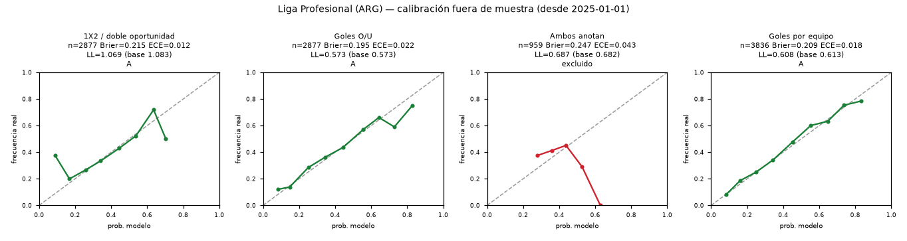
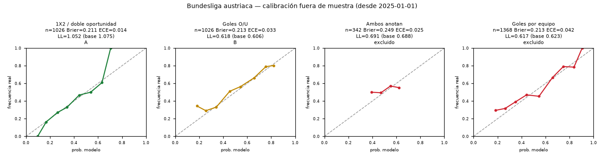
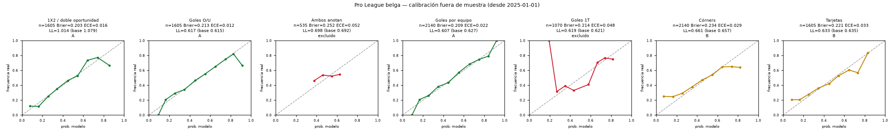
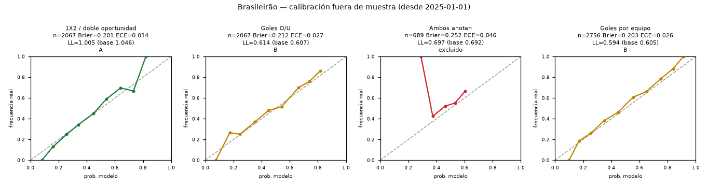
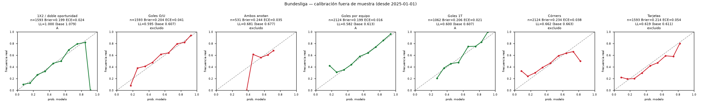
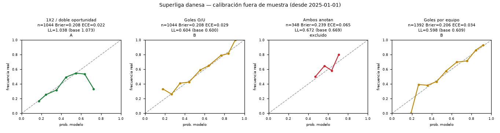
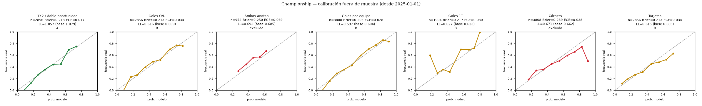
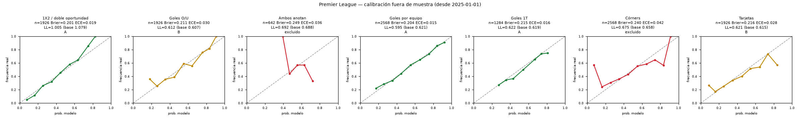
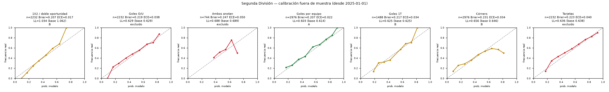
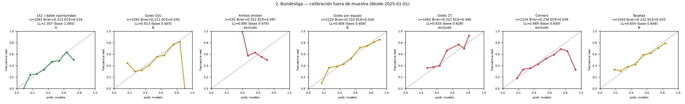
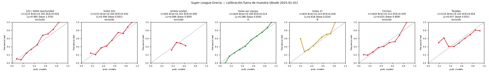
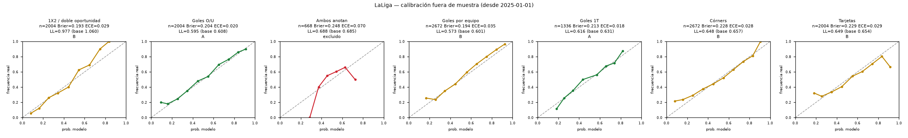
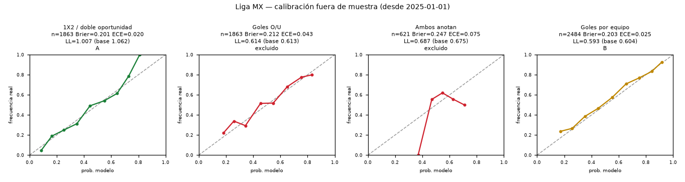
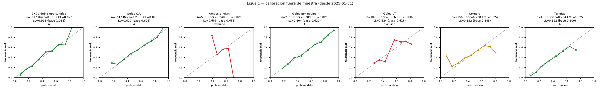
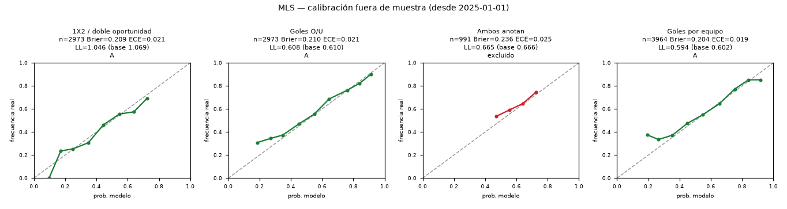
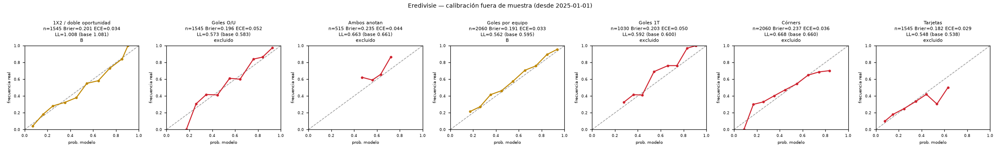
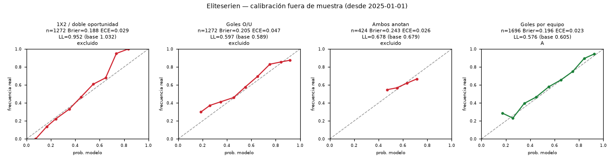
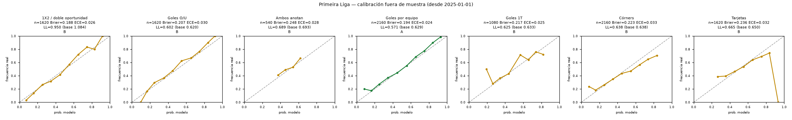
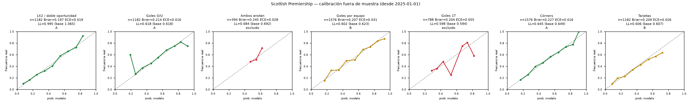
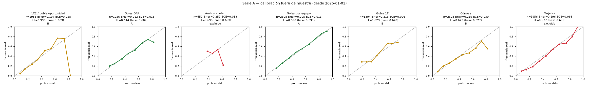
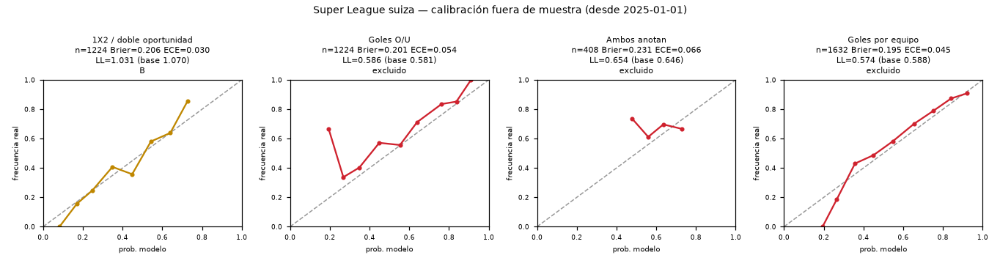
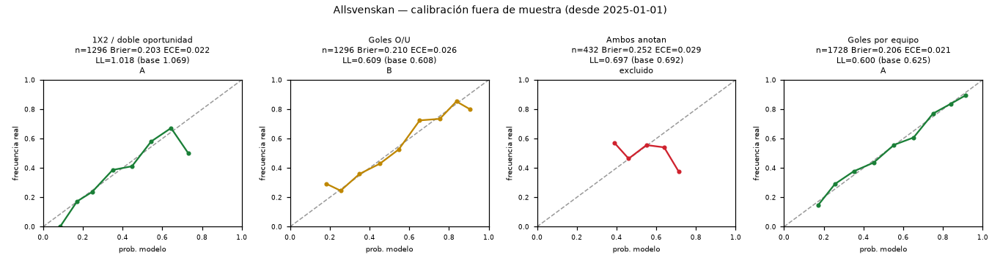
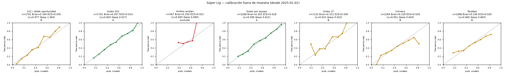
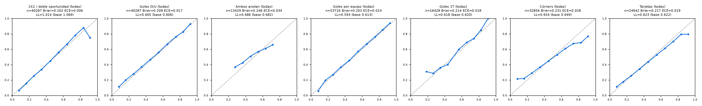